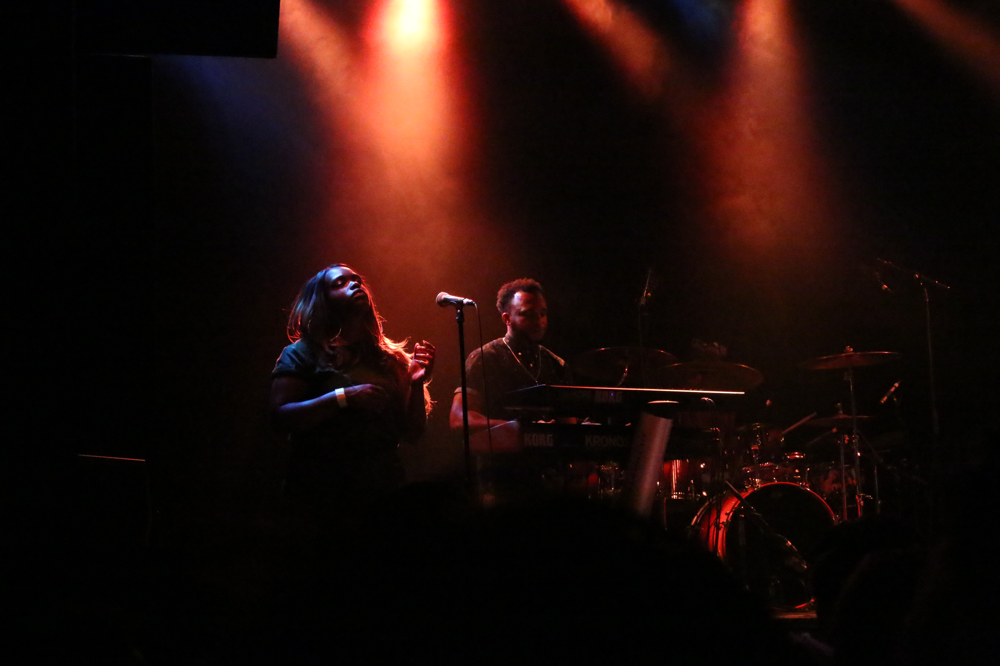

Earlier this year, Tank and The Bangas’ Tiny Desk contest-winning video went (deservedly) viral. NPR’s been hosting the concerts since 2008 (there had been 550, viewed a collective 80 million times as of November 2016), and the yearly contest is going on its fourth cycle now. But as much of an NPR fan-girl as I am Tank’s video is the first I remember watching the whole way through. Because, and maybe there’s no other way to put it, Tank, and The Bangas, are artists in a spectacularly new way.
This past Thursday the group came up (they’re from and based in New Orleans) with Sweet Crude to play a gig at The Sinclair. Sweet Crude opened, starting exactly on time (and maybe I’m not going to enough Sinclair gigs but that has never happened to me, not once, not even within 15 minutes of the posted time) and right away had the half-full crowd completely rapt. Alexis Marceaux, in particular, one half of the front of the band (completed by Sam Craft) was such a presence that it was easy to forget there were other things going on. Her emphasis on performing, rather than just playing, retrospectively was a great set-up for a similar vibe from Tank, though I’d be remiss not to include that the entire band (NB comment if you agree the keyboardist looks like a bassist) were certainly musicians of an impressive caliber, with complete control of rhythm and mood. They made switching tempos look easy, and the rough choreography read as authentic good vibes between whoever took part.

I would confirm the other Advocate’s 2014 impression that “Sweet Crude’s sonic scaffolding is built of vocals and drums,” which was new and exciting to hear but lacked some diversity. The moments of Louisianan French too, were cool and unexpected, but whether or not they’re native speakers most of it was too garbled to understand (not so for the English bits.)
When Tank and The Bangas came on we were ready, and the trickle that’d filled gaps between couples and friends in the Sinclair’s open lobby meant you could literally feel the excitement with every neighbor that bumped you turning to grin at their friends. The opening (they did Intro from Think Tank and Crazy) was rough after the nuance of Sweet Crude’s performance, and it was hard to hear melody or anything other than drums and a general wall of sound, but I’d put that onto poor sound balancing from tech rather than a fault of the performers specifically. Even through the “wall of sound” vibe though, performers seemed to be taking it as a challenge to play or sing louder and more passionately, which was exciting even if it didn’t help the audibility issue. By Quick though, the fourth song of the set (and the same featured by Tiny Desk) everyone (including the sound guys) found their groove. You’ve probably heard the Tiny Desk version (dude click the link, promise it’s worth it) but in person Quick sounds like a spoken word poem over the kind of jam that, once you’ve heard it, you send to that friend whose taste in music is both unimpeachable and untouchable to prove you can touch it. When I called Tank an “artist” earlier it was because no other label, since every other label, seems to fit. She’s a singer, but she’s also a rapper (with moments that couldn’t recall Nicki Minaj more clearly if they were sisters), a spoken word poet, a revolutionary, and a fine, fine musician. And their music is a completely different experience live than it is on the record. It’s good music if you’re listening on the Subway, or in your room. But live, you get the presence of (primarily) Tank and a few other members (Anjelika “Jelly” Joseph deserves a solo career stat) absolutely loving what they do and making sure you love it too.
The crowd (I’m including myself in this) was alternately rapt for quiet moments (like a sick keyboard interlude from Joe Johnson) and bouncing with energy, but never disengaged. Without a doubt I’d see them again (I’d see Sweet Crude too, for that matter) and if I ran a festival TatB would be top of my list. They’re on tour in the states until October 28th (Europe after that) and if you’re into poetry, funk, soul, strong vibes, or are open to having your mind changed on any of the above – quick, get a ticket.